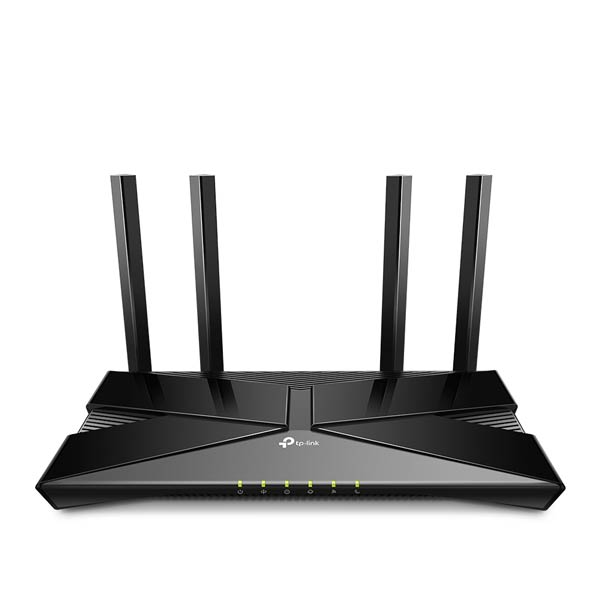

TP-Link XX230v AX1800 Dual Band Wi-Fi 6 GPON Router
- Standart: WiFi 6, 2.4/5GHz
- WiFi Sürəti: AX1800 5GHz-1201Mbps 2.4GHz-574Mbps
- Ötürmə Gücü: CE: <20 dBm (2.4 GHz) <23 dBm (5 GHz)
- Wireless Security: WPA/WPA2/WPA3
- Port Forwarding: Virtual Server, Port Triggering, DMZ, ALG, UPnP
- Ehternet Portlar: 1x Gigabit WAN, 3x Gigabit LAN